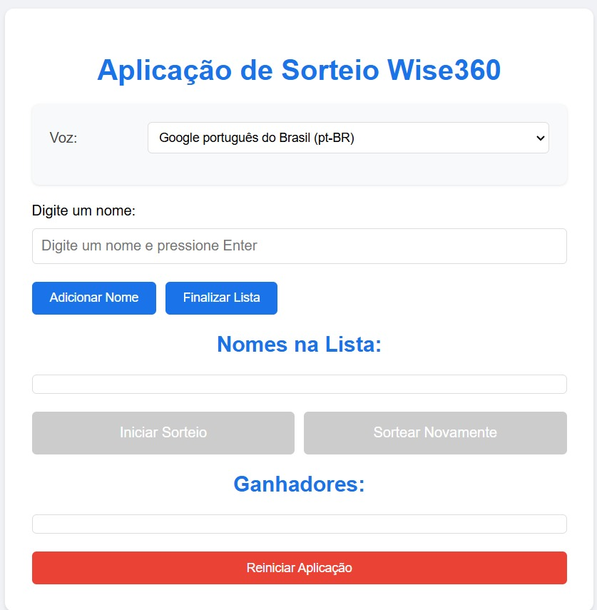
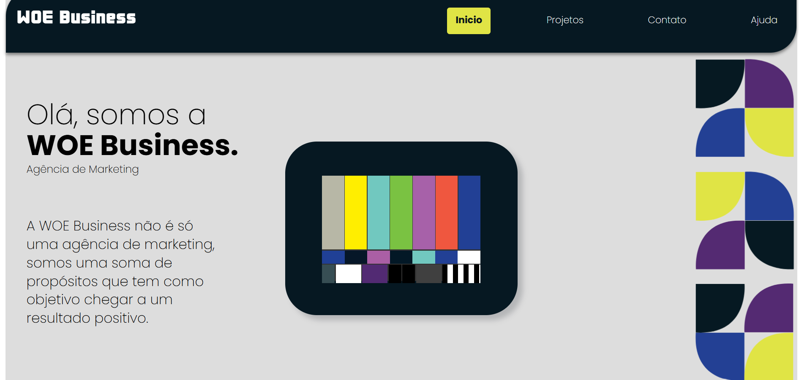
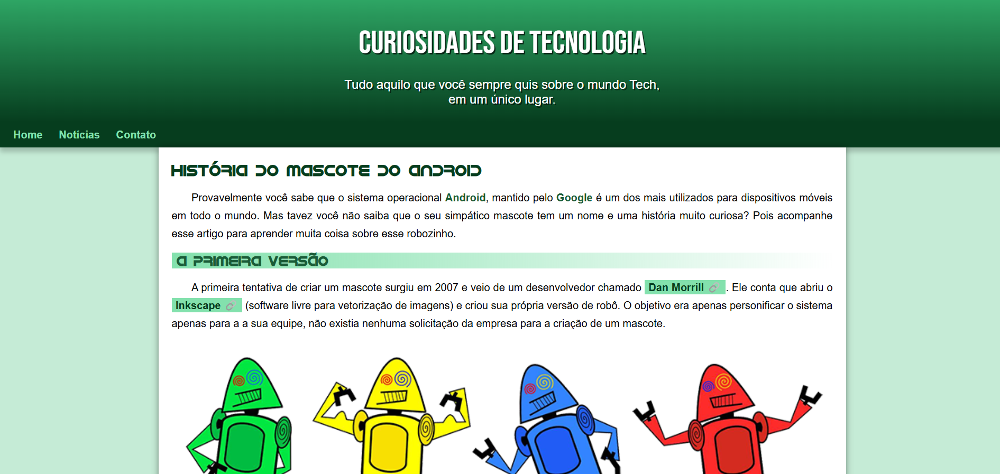

Laís Cristine Mariano

Sou apaixonada por criar experiências digitais únicas. Com experiência em áreas tecnologicas como programação, inteligência artificial e inovações digitais. Estou sempre em busca de novos aprendizados e desafios para aprimorar minhas habilidades e contribuir com soluções criativas para o mundo da tecnologia. Neste portfólio, você encontrará meus cursos e certificados, que mostram minha dedicação ao aprendizado e desenvolvimento profissional. Atualmente, estou criando um portfólio de site para uma microempresa, você escontrará o link abaixo para acompanhar o andamento do projeto.
Meus Projetos

Sorteio
Uma aplicação web interativa para realizar sorteios de forma dinâmica, com suporte a áudio e feedback por voz. O site anuncia os nomes sorteados e os remove automaticamente da lista, garantindo organização e evitando repetições.
Acompanhar Desenvolvimento

Portfólio
Estou desenvolvendo o portfólio de uma microempresa que oferece serviços como mídias sociais, identidades visuais e produção audiovisual. O projeto, ainda em andamento, busca transmitir uma experiência criativa e de qualidade.
Acompanhar Desenvolvimento

História do Mascote do Android
Como exercício prático, desenvolvi um site dedicado à história do mascote do Android. O projeto aborda a origem e evolução do icônico robozinho verde, combinando conteúdo informativo com técnicas de HTML5 e CSS3 aprendidas no curso do Gustavo Guanabara. O site também reflete meus avanços em design responsivo e organização de elementos visuais.
Visitar Site
Cordel Moderno
Como parte do curso mencionado no projeto anterior, também criei um site sobre a poesia contemporânea da literatura "Cordel Moderno" escrita por Milton Duarte. O projeto combina elementos textuais e visuais, utilizando técnicas de HTML5 e CSS3, e reflete minha evolução em organização de layouts, personalização de estilos e aplicação de efeitos visuais para enriquecer a experiência do usuário.
Visitar Site